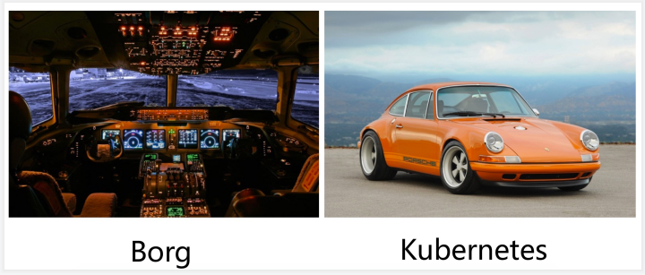

- 作者 :Xcbeyond
- 发表于 :2020-10-26
- 分类 : Kubernetes
是时候该学习
Kubernetes了，不然都不敢说自己了解容器、了解Docker。
1、Kubernetes的前世
Kubernetes，它是一个全新的基于容器技术的分布式架构方案，近些年在容器领域使用非常广泛，作为容器化部署实施的典型方案。
看似很新（相对于刚出现时来说），但它却是谷歌十几年以来大规模应用容器技术的经验积累和升华的重要成果。确切地说，Kubernetes是谷歌严格保密十几年的秘密武器——Borg的一个开源版本。Borg是谷歌的一个久负盛名的内部使用的大规模集群管理系统，它基于容器技术，目的是实现资源管理的自动化，以及跨过个数据中心资源利用率的最大化。十几年以来，谷歌一直通过Borg系统管理者数据庞大的应用程序集群，由于谷歌员工都签署了保密协议，即使离职也不能泄露Borg的内部设计，所以外界一直无法了解关于它的更多信息。直到2015年4月，传闻许久的Borg论文发布，伴随着Kubernetes的高调宣传被谷歌首次公开，大家才得以了解它的更多内幕。正式由于站在Borg这个前辈的肩膀上，汲取了Borg过去十年间的经验与教训，所以Kubernetes一经开源就一鸣惊人，并迅速称霸容器领域。

Borg就是一个喷气式飞机的驾驶系统，非常的专业和高大上，他适用于谷歌这样的大公司，它有几百万的机器。Kubernetes是一个它的简化版，它是一辆设计优良的轿车，它适合中小型公司，更方便的用它来调度自己的集群。
2、Kubernetes是什么？
Kubernetes是用于自动部署，扩展和管理容器化应用程序的开源系统，它将组成应用程序的容器组合成逻辑单元，以便于管理和服务发现。Kubernetes源自谷歌15年生产环境的运维经验，同时凝聚了社区的最佳创意和实践。

Kubernetes，构建在Docker技术之上，为跨主机的容器化应用提供资源调度、服务发现、高可用管理和弹性伸缩等一整套功能，它提供了完善的管理工具，涵盖开发、部署测试、运维监控等各个环节。它的目标不仅仅是一个编排系统，更是提供一个规范，可以让你来描述集群的架构，定义服务的最终状态，Kubernetes可以帮你将系统自动达到和维持在这个状态。

2.1 亮点
亮点1： Kubernetes以“一切以服务（Service）为中心，一切围绕服务运转”作为指导思想的创新型产品。它在功能和架构设计上始终遵循着这一指导思想，构建在Kubernetes上的系统不仅可以独立运行在物理机、虚拟机集群或企业私有云上，也可以被托管在公有云上。
亮点2： Kubernetes是一个开放的开发平台。与J2EE不同，它不局限于任何一种语言，没有限定任何编程接口，所以不论是用Java、Go、C++还是Python编写的程序，都可以被映射为Kubernetes的Service，并通过标准的TCP通讯协议进行交互。此外，Kubernetes平台对现有的编程语言、编程框架、中间件没有任何侵入性，做到了零侵入，因此现有的系统也很容易改造升级并迁移到Kubernetes平台之上。
亮点3： Kubernetes的另一个亮点是自动化。在Kubernetes的解决方案中，一个可以自我扩展、自我诊断，并且容易升级，在收到服务扩容的请求后，Kubernetes会触发调度流程，最终在选定的目标节点上启动相应数据的服务实例副本，这些服务实例副本在启动成功后会自动加入负载均衡器中并生效，整个过程无须额外的人工操作。另外，Kubernetes会定时巡查每个服务的所有实例的可用性，确保服务实例的数量始终保持为预期的数量，当它发现某个实例不可用时，会自动重启该实例或者其他节点上重新调度、运行一个新实例，这样一个复杂的过程无须人工干预即可全部自动完成。
亮点4： Kubernetes是一个完备的分布式系统支撑平台。具备完备的集群管理能力，包括多层次的安全防护和准入机制、多租户应用支撑能力、透明的服务注册和服务发现机制、内建的智能负载均衡器、强大的故障发现和自我修复能力、服务滚动升级和在线扩容能力、可扩展的资源自动调度机制，以及多粒度的资源配额管理能力。同时，Kubernetes提供了完善的管理工具，这些涵盖了包括开发、部署测试、运维监控在内的各个环节。因此，Kubernetes是一个全新的基于容器技术的分布式架构解决方案，并且是一个一站式的完备的分布式系统开发和支持平台。
随着容器化部署环境限制、语言差异、容器数量的庞大、负载均衡、故障检测、故障修复等问题，倘若将过多的精力、时间放在这些地方，其工作量将会多大，将会让很多企业、产品对容器望而止步。在容器化的时代，Kubernetes足以免去上述面临的问题，让容器化使用变得的更加容易、轻松，只需花费更多的时间去完成业务功能的开发。
2.2 特性
Kubernetes特性如下：
Service拓扑： 基于集群拓扑的服务流量路由。可以让一个服务基于集群的Node拓扑进行流量路由。例如，一个服务可以指定流量是被优先路由到一个和客户端在同一个Node或者在同一可用区域的端点。
端点切片： Kubernetes 集群中网络端点的可扩展跟踪。
存储编排： 自动挂载所选存储系统，包括本地存储、诸如 GCP 或 AWS 之类公有云提供商所提供的存储或者诸如 NFS、iSCSI、Gluster、Ceph、Cinder 或 Flocker 这类网络存储系统。
Secret和配置管理： 部署和更新 Secrets 和应用程序的配置而不必重新构建容器镜像，且不必将软件堆栈配置中的秘密信息暴露出来。
批量执行： 除了服务之外，Kubernetes 还可以管理你的批处理和 CI 工作负载，在期望时替换掉失效的容器。
服务发现与负载均衡： 无需修改您的应用程序即可使用陌生的服务发现机制。Kubernetes 为容器提供了自己的 IP 地址和一个 DNS 名称，并且可以在它们之间实现负载均衡。
自我修复： 重新启动失败的容器，在节点死亡时替换并重新调度容器，杀死不响应用户定义的健康检查的容器，并且在它们准备好服务之前不会将它们公布给客户端。
自动化上线和回滚： Kubernetes 会分步骤地将针对应用或其配置的更改上线，同时监视应用程序运行状况以确保你不会同时终止所有实例。如果出现问题，Kubernetes 会为你回滚所作更改。你应该充分利用不断成长的部署方案生态系统。
自动装箱： 根据资源需求和其他约束自动放置容器，同时避免影响可用性。将关键性工作负载和尽力而为性质的服务工作负载进行混合放置，以提高资源利用率并节省更多资源。
IPv4/IPv6双协议栈： 为 Pod 和 Service 分配 IPv4 和 IPv6 地址。
水平扩缩： 使用一个简单的命令、一个UI或基于CPU使用情况自动对应用程序进行扩缩。
3、为什么使用Kubernetes？
使用Kubernetes的理由很多，最重要的理由是，IT行业从来都是由新技术驱动的。
当前，Docker容器化技术已经被很多公司采用，从单机走向集群已成为必然。云计算的蓬勃发展正在加速这一进程。Kubernetes作为当前被业界广泛认可和看好的基于Docker的大规模容器化分布式系统解决方案，得到了以谷歌为首的IT巨头们的大力宣传和维持推进。
2015年，谷歌联合20多家公司一起建立了CNCF（Cloud Native Computing Foundation，云原生计算基金会）开源组织来推广Kubernetes，并由此开创了云原生应用（Cloud Native Application）的新时代。作为CNCF“钦定”的官方云原生平台，Kubernetes正在颠覆应用程序的开发方式。
不妨从以下几个方面来看看，你一定会喜欢上它的哦！
3.1 一个平台搞定所有
使用 Kubernetes部署任何应用都是小菜一碟。只要应用可以打包成镜像，能够容器部署，Kubernetes就一定能启动它。

不管什么语言、什么框架写的应用（如：Java, Python, Node.js），Kubernetes都可以在任何环境中安全的启动它，如：物理服务器、虚拟机、云环境。
3.2 云环境无缝迁移
如果你有换云环境的需求，例如从GCP到AWS，使用Kubernetes的话，你就不用有任何担心。

Kubernetes完全兼容各种云服务提供商，例如 Google Cloud、Amazon、Microsoft Azure，还可以工作在 CloudStack, OpenStack, OVirt, Photon, VSphere等。
3.3 高效的利用资源
看下图，左边是4个虚拟机，黄色和蓝色部分是运行的应用，白色部分是未使用的内存和处理器资源。
右边，同样的应用打包运行在容器中。

Kubernetes如果发现有节点工作不饱和，便会重新分配pod，帮助我们节省开销，高效的利用内存、处理器等资源。
如果一个节点宕机了，Kubernetes会自动重新创建之前运行在此节点上的pod，在其他节点上运行。
3.4 开箱即用的自动缩放能力
网络、负载均衡、复制等特性，对于Kubernetes都是开箱即用的。
pod是无状态运行的，任何时候有pod宕了，立马会有其他pod接替它的工作，用户完全感觉不到。
如果用户量突然暴增，现有的pod规模不足了，那么会自动创建出一批新的pod，以适应当前的需求。
反之亦然，当负载降下来的时候，Kubernetes也会自动缩减 pod 的数量。

3.5 使CI/CD更简单
你不必精通于Chef 和 Ansible这类工具，只需要对 CI 服务写个简单的脚本然后运行它，就会使用你的代码创建一个新的 pod，并部署到 Kubernetes集群里面。
应用打包在容器中使其可以安全的运行在任何地方，例如你的 PC、一个云服务器，使得测试极其简单。

3.6 可靠性
Kubernetes如此流行的一个重要原因是：应用会一直顺利运行，不会被pod或节点的故障所中断。
如果出现故障，Kubernetes会创建必要数量的应用镜像，并分配到健康的pod或节点中，直到系统恢复。
而且用户不会感到任何不适。

一个容器化的基础设施是有自愈能力的，可以提供应用程序的不间断操作，即使一部分基础设施出现故障。
4、总结
Kubernetes使得应用的启动、迁移、部署变得简单又安全。
不必担心应用迁移后工作出现问题，也不用担心一台服务器无法应付突发的用户量。
需要注意的是，你的应用最好使用微服务架构进行开发，因为微服务应用比单体应用更适合做容器化。
不要为了单纯的使用Kubernetes而引入，要看你的系统规模是否值得去用，否则可能适得其反，毕竟Kubernetes的学习是需要一定成本。
参考文章：